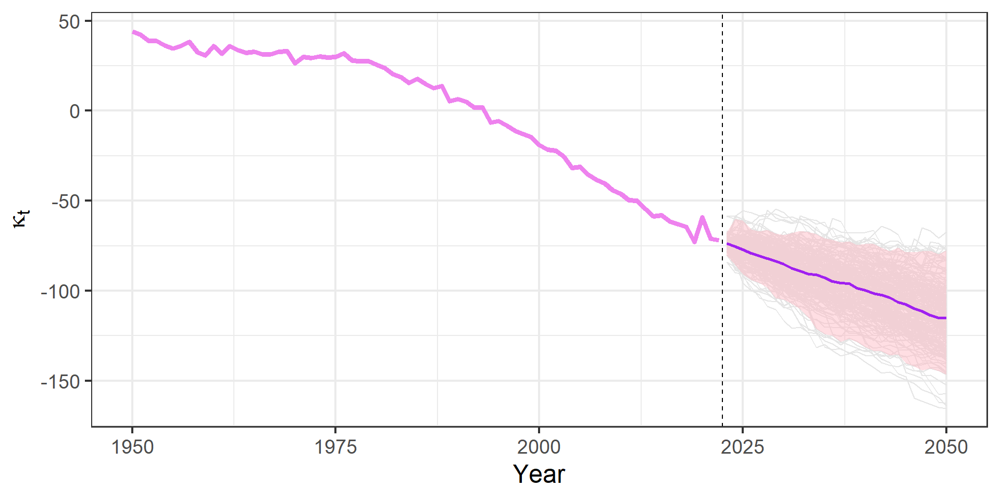
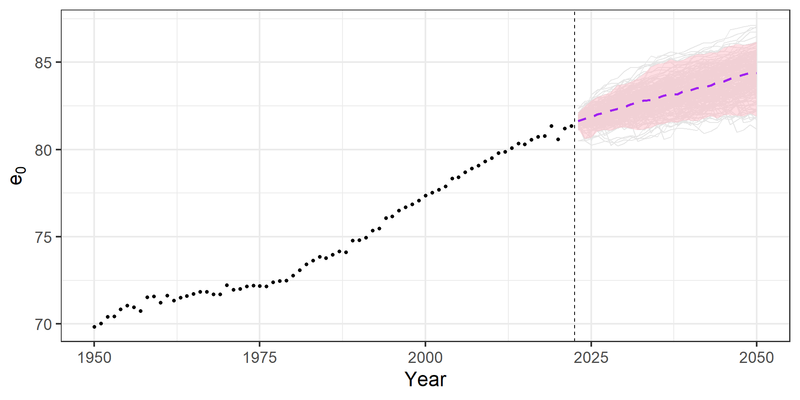

Demographic Forecasting
Lecture 4: the Lee-Carter method
March 7, 2024
Course overview
- Lecture 1: direct extrapolation by (generalized) linear models
- Lecture 2: direct extrapolation by time-series methods
- Lecture 3: parametric approaches
- Lecture 4: the Lee-Carter method
Mortality forecasting
- Crucial for sustainability of pensions, insurances, elderly care; predicting population ageing and projecting populations; …
- Until the 1980s, the methods used to forecast mortality were deterministic, based on mathematical formulae or expert judgment
- Revived interest in recent years following the introduction of the Lee-Carter method in 1992
- One of the firstly introduced stochastic mortality models \(\Rightarrow\) the model “revolutionized probabilistic mortality and population forecasting” (Raftery 2023)
The Lee-Carter method (1992)
- Proposed in 1992 to model and forecast US mortality
- After 30+ years, Lee-Carter (LC) still widely employed by variety of users: governments, private companies, international organizations, …
- The landmark model in mortality forecasting
- An extrapolation method:
- model the mortality surface over age and time
- extrapolate trends in the future, assuming that observed trends will continue
- Simplicity, robustness and objectivity have made the model so successful
- Nonetheless, some limitations of the model have stimulated several extensions over the years (see Basellini et al. (2023) for a recent comprehensive review)
The LC method
- A simple log-bilinear functional form for mortality rates \(m_{x,t}\) at age \(x\) and time \(t\) \[ \ln \left(m_{x,t}\right) = \color{green}{\alpha_x} + \color{orange}{\beta_x} \color{violet}{\kappa_t} + \epsilon_{x,t} \] where:
- \(\color{green}{\alpha_x}\) is the general shape of log-mortality at age \(x\)
- \(\color{orange}{\beta_x}\) is the rate of mortality improvement at age \(x\)
- \(\color{violet}{\kappa_t}\) is the general level of mortality at time \(t\)
- \(\epsilon_{x,t}\) is the error term with mean 0 and variance \(\sigma^2_\epsilon\), reflecting residual age-specific influences not captured by the model
- Modelling log-rates \(\Rightarrow\) fitted and forecast rates constrained to be positive
- Log transformation partially counters heteroscedasticity of observed rates
The LC method
- The model is undetermined: if \(\boldsymbol{\theta}_1 = \left[\boldsymbol{\color{green}{\alpha}},\boldsymbol{\color{orange}{\beta}},\boldsymbol{\color{violet}{\kappa}} \right]\) is a solution, then for any scalar \(c\):
- \(\boldsymbol{\theta}_2 = \left[\boldsymbol{\color{green}{\alpha}} - \boldsymbol{\color{orange}{\beta}} c ,\boldsymbol{\color{orange}{\beta}},\boldsymbol{\color{violet}{\kappa}} + c\right]\) is also a solution
- \(\boldsymbol{\theta}_3 = \left[\boldsymbol{\color{green}{\alpha}}, \boldsymbol{\color{orange}{\beta}} c, \boldsymbol{\color{violet}{\kappa}} / c\right]\) is also a solution
- Two constraints introduced to ensure model identification:
\[ \sum_x \color{orange}{\beta_x} = 1 \qquad \mathrm{and} \qquad \sum_t \color{violet}{\kappa_t} = 0\]
The LC method: a schematic view
\[\ln \left(m_{x,t}\right) \simeq \color{green}{\alpha_x} + \color{orange}{\beta_x} \color{violet}{\kappa_t}\]
\[ \left ( \begin{array}{cccc} \ln(m_{x_1,t_1}) & \ln(m_{x_1,t_2}) & \ldots & \ln(m_{x_1,t_n})\\ \ln(m_{x_2,t_1}) & \ln(m_{x_2,t_2}) & \ldots & \ln(m_{x_2,t_n})\\ \ln(m_{x_3,t_1}) & \ln(m_{x_3,t_2}) & \ldots & \ln(m_{x_3,t_n})\\ \vdots & \vdots & \ddots & \vdots \\ \ln(m_{x_m,t_1}) & \ln(m_{x_m,t_2}) & \ldots & \ln(m_{x_m,t_n})\\ \end{array} \right ) \simeq \]
\[ \left ( \begin{array}{c} \color{green}{\alpha_{x_1}}\\ \color{green}{\alpha_{x_2}}\\ \color{green}{\alpha_{x_3}}\\ \color{green}{\vdots}\\ \color{green}{\alpha_{x_m}}\\ \end{array} \right ) + \left ( \begin{array}{c} \color{orange}{\beta_{x_1}}\\ \color{orange}{\beta_{x_2}}\\ \color{orange}{\beta_{x_3}}\\ \color{orange}{\vdots}\\ \color{orange}{\beta_{x_m}}\\ \end{array} \right ) \, \left ( \begin{array}{cccc} \color{violet}{\kappa_{t_1}} & \color{violet}{\kappa_{t_2}} & \color{violet}{\ldots} & \color{violet}{\kappa_{t_n}} \end{array} \right ) \]
\[ \underbrace{n}_{\mbox{years}} \times \underbrace{m}_{\mbox{ages}} = \underbrace{mn}_{\mbox{cells}} \simeq \underbrace{m}_{\color{green}{\alpha_{i}}} + \underbrace{m}_{\color{orange}{\beta_{i}}} + \underbrace{n}_{\color{violet}{\kappa_{j}}} - \underbrace{2}_{\mbox{constraints}} = \underbrace{2m + n - 2}_{\mbox{parameters}} \]
Model estimation
The model is estimated by minimizing the residual sum of squares: \[ \sum_{x,t} \Big(\ln \left(m_{x,t}\right) - \color{green}{\alpha_x} - \color{orange}{\beta_x} \color{violet}{\kappa_t} \Big)^2 \qquad(1)\]
A singular value decomposition (SVD) is employed to minimize Equation 1 & derive an ordinary least squares (OLS) solution:
- \(\color{green}{\hat{\alpha}_x}\) is the average of the observed \(\ln \left(m_{x,t}\right)\)
Exercise
Exercise
Open your R session. Load the MortSWE.Rdata dataset, and consider only data from 1950 onward for males aged \(0 \leq x\leq100\). Derive the LC estimate of the \(\color{green}{\alpha_x}\) parameter
Hint: Replace the only cell with 0 deaths with a tiny number of deaths (e.g., 1), and compute again the matrix of log-mortality rates. This will be particularly helpful later on.
One possible solution
One possible solution
Model estimation
The model is estimated by minimizing the residual sum of squares: \[ \sum_{x,t} \Big(\ln \left(m_{x,t}\right) - \color{green}{\alpha_x} - \color{orange}{\beta_x} \color{violet}{\kappa_t} \Big)^2 \qquad(2)\]
A singular value decomposition (SVD) is employed to minimize Equation 2 & derive an ordinary least squares (OLS) solution:
- \(\color{green}{\hat{\alpha}_x}\) is the average of the observed \(\ln \left(m_{x,t}\right)\)
- \(\color{orange}{\hat{\beta}_x}\) and \(\color{violet}{\hat{\kappa}_t}\) are the first left- and right-singular vectors of the SVD of the matrix \(\ln \left(m_{x,t}\right) - \color{green}{\hat{\alpha}_x}\), adjusted to comply with the two constraints \(\sum_x \color{orange}{\beta_x} = 1 \qquad \mathrm{and} \qquad \sum_t \color{violet}{\kappa_t} = 0\)
Exercise
Exercise
Now perform a singular value decomposition of the matrix of “centered” mortality rates \(\, \ln \left(m_{x,t}\right) - \color{green}{\hat{\alpha}_x}\), and plot the first left- and right-singular vectors
Hint: Use the command svd(x=.,nu=1,nv=1) to perform the SVD of your centred mortality rates matrix, and then extract the vectors u and v from the SVD object. Remember to use the modified log-rates matrix (which excludes infinite values).
One possible solution
Log-mortality rates
Centred log-mortality rates
\(\color{orange}{\hat{\beta}_x}\) and \(\color{violet}{\hat{\kappa}_t}\) from SVD
\(\color{orange}{\hat{\beta}_x}\) and \(\color{violet}{\hat{\kappa}_t}\) with constraints
Second step estimation of \(\, \color{violet}{\hat{\kappa}_t}\)
In a second-step estimation, \(\color{violet}{\hat{\kappa}_t}\) is adjusted so that the fitted deaths match the observed deaths in all years, i.e.
\[ \sum_x \hat{y}_{x,t} = \sum_x y_{x,t} \quad \text{for all }t \]
One possible solution
##---- step 3: adjust KAPPA -----
## function to compute difference between observed and fitted LC deaths
koptim <- function(par,alpha,beta,sum.dx,Exp){
kappa <- par[1]
lmx.lc <- alpha+beta*kappa
z.lc <- exp(lmx.lc)*Exp
sum.z.lc <- sum(z.lc)
diff.lc <- abs(sum.dx-sum.z.lc)
return(diff.lc)
}
## adjust Kappa every year
Kappa <- numeric(n)
for (i in 1:n){
KappaSecStep <- optimize(f=koptim,interval=c(-100,100),alpha=Alpha,
beta=Beta,sum.dx=sum(DEATHS[,i]),Exp=EXPOS[,i])
Kappa[i] <- KappaSecStep$minimum
}
## plotting
plot(t,Kappa1,ylim=range(Kappa1,Kappa),t="l",lwd=2)
lines(t,Kappa,col=4,lwd=2)
legend("topright",c("from SVD","second-step adjustment"),col=c(1,4),lwd=2)Second step estimation of \(\, \color{violet}{\hat{\kappa}_t}\)
Goodness-of-fit
Intermezzo : animated visualizations & shiny-app
In some instances, it can be useful to introduce dynamic plots, animations and flexible outputs in your presentations or documents:
- can grab the audience’s attention
- show time-series evolutions
- to describe your model
- sensitivity analysis of your results
Animated images
\animategraphicsin Beamer (see LaTeX workshop)gganimatepackage in Quarto
Animation plots with gganimate
## fitted log-mortality
Ones <- matrix(1,n)
ETAlc <- Alpha%*%t(Ones) + Beta%*%t(Kappa)
## basic plot
g <- my.df %>%
mutate(logRates=case_when(
is.infinite(logRates)~NA,
TRUE~logRates),
Fitted=c(ETAlc)) %>%
ggplot(aes(x=Age,group=Year))+
geom_point(aes(y=logRates))+
geom_line(aes(y=Fitted),color="darkorange",linewidth=1.2)+
scale_color_viridis_c() +
theme_bw(base_size = 18) +
labs(y= "Log Mortality Rate")
## animating with gganimate
library(gganimate)
gg <- g + transition_time(Year) +
ggtitle("Year {frame_time}")
animate(gg, fps=4)Goodness-of-fit
Shiny apps
shinyis anRpackage that makes it easy to build interactive web apps straight fromR- keep them on webpages or embed them in R Markdown documents or Quarto presentations
- a user-friendly interface to interact with your
Ranalysis and show your results (my own example) - it is composed by
- an
UI(user interface), where you can create the inputs for your and decide the outputs to display - a
server, where you assemble the outputs from your given inputs - the
shinyApp, putting the two together
- an
- to learn more, visit https://shiny.posit.co/ to get started, plenty of videos and written tutorials
Shiny app: an example
##---- SHINY APP EXAMPLE ----
## cleaning the workspace
rm(list=ls(all=TRUE))
## load useful packages
library(tidyverse)
library(patchwork)
library(shiny)
## loading data
setwd(dirname(rstudioapi::getActiveDocumentContext()$path))
load("data/MORTSWE.Rdata")
## subset
my.df <- MORT.SWE %>% filter(Sex=="Male", Age <= 100)
## build your user interface
ui <- fluidPage(
## title of your shiny
titlePanel("LC parameters"),
## display a slider that returns input$year to pass to the server function
sliderInput(inputId = "year", label = "Year", step = 1,
value = 1950, min = 1950, max = 2022),
## display a plot returned from the server
plotOutput("plot_pars")
)
## build your server
server <- function(input, output){
## create an output that renders a plot
output$plot_pars <- renderPlot({
## subsetting data based on given input (input$year)
my.df <- my.df %>% filter(Year>=input$year)
## extract data
x <- unique(my.df$Age)
t <- unique(my.df$Year)
n <- length(t)
m <- length(x)
## matrices
DEATHS <- matrix(my.df$Deaths,m,n)
EXPOS <- matrix(my.df$Exposures,m,n)
##---- step 1: derive ALPHA -----
## adjust deaths and log-rates
DEATHS1 <- DEATHS
DEATHS1[DEATHS==0] <- min(DEATHS[DEATHS!=0])
LRATES1 <- log(DEATHS1/EXPOS)
## compute the mean of observed rates
Alpha <- apply(LRATES1,1,mean)
##---- step 2: derive BETA and KAPPA -----
## derive matrix of residuals ("centred" mortality rates)
LMXres <- LRATES1 - Alpha
## performing the SVD
LCsvd <- svd(LMXres,nu=1,nv=1)
## extract first left- and right-singular vectors of svd
Beta <- c(LCsvd$u)
Kappa1 <- c(LCsvd$v)
## including the constraints
## constraint 1
sum.Beta <- sum(Beta)
Beta <- Beta/sum.Beta
## constraint 2
Kappa1 <- LCsvd$d[1]*Kappa1*sum.Beta
##---- step 3: adjust KAPPA -----
## function to compute difference between observed and fitted LC deaths
koptim <- function(par,alpha,beta,sum.dx,Exp){
kappa <- par[1]
lmx.lc <- alpha+beta*kappa
z.lc <- exp(lmx.lc)*Exp
sum.z.lc <- sum(z.lc)
diff.lc <- abs(sum.dx-sum.z.lc)
return(diff.lc)
}
## adjust Kappa every year
Kappa <- numeric(n)
for (i in 1:n){
KappaSecStep <- optimize(f=koptim,interval=c(-100,100),alpha=Alpha,beta=Beta,sum.dx=sum(DEATHS[,i]),
Exp=EXPOS[,i])
Kappa[i] <- KappaSecStep$minimum
}
## plot of parameters
df.plot.1 <- tibble(Age=x,Alpha=Alpha,Beta=Beta)
df.plot.2 <- tibble(Year=t,Kappa=Kappa)
f1 <- df.plot.1 %>% pivot_longer(-Age) %>%
ggplot(aes(x=Age,y=value,color=name)) +
geom_line()+
facet_wrap(.~name,scales="free_y")
f2 <- df.plot.2 %>%
ggplot(aes(x=Year,y=Kappa)) +
geom_line()
## combining plots
f1+f2
})
}
## run the shiny app, which puts together the ui and server
shinyApp(ui = ui, server = server)Shiny app: an example

Forecasting with LC
- Forecasting “made simple”: choose an appropriate time-series model for \(\color{violet}{\hat{\kappa}_t}\) and extrapolate it
- The forecast \(\color{violet}{\hat{\kappa}_{T+h}}\) allows one to derive the entire age-pattern of mortality at time \(T+h\): \[\ln\left(\hat{m}_{x,T+h}\right) =\color{green}{\hat{\alpha}_x} +\color{orange}{\hat{\beta}_x}\color{violet}{\hat{\kappa}_{T+h}} \]
- LC suggest a random walk model (i.e. ARIMA(0,1,0)) with drift: \(\color{violet}{\kappa_t} = \color{violet}{\kappa_{t-1}} + c + e_t\) where \(c\) is a constant (drift) and \(e_t\) the error term (purely random process)
- For this time-series model: \(\color{violet}{\hat{\kappa}_{T+h|T}} = \color{violet}{\hat{\kappa}_{T}} + c \, h\)
- Simulated future trajectories of \(\color{violet}{\hat{\kappa}_{T+h}}\) to construct prediction intervals for \(\hat{m}_{x,T+h}\) and other summary measures (e.g., \(\hat{e}_{0,T+h}\))
- (Coale and Guo (1989) adjustment for forecast rates at ages 85+)
Forecasting with LC: a schematic view
\[\ln \left(m_{x,t}\right) \simeq \color{green}{\alpha_x} + \color{orange}{\beta_x} \color{violet}{\kappa_t} \qquad\qquad \color{blue}{\ln \left(m_{x,T+h}\right)} \simeq \color{green}{\alpha_x} + \color{orange}{\beta_x} \color{blue}{\kappa_{t_F}}\]
\[ \left ( \begin{array}{ccccccc} \ln(m_{x_1,t_1}) & \ln(m_{x_1,t_2}) & \ldots & \ln(m_{x_1,T}) & \color{blue}{\ln(m_{x_1,T+1})} & \color{blue}{\ldots} & \color{blue}{\ln(m_{x_1,T+h})} \\ \ln(m_{x_2,t_1}) & \ln(m_{x_2,t_2}) & \ldots & \ln(m_{x_2,T}) & \color{blue}{\ln(m_{x_2,T+1})} & \color{blue}{\ldots} & \color{blue}{\ln(m_{x_2,T+h})} \\ \ln(m_{x_3,t_1}) & \ln(m_{x_3,t_2}) & \ldots & \ln(m_{x_3,T}) & \color{blue}{\ln(m_{x_3,T+1})} & \color{blue}{\ldots} & \color{blue}{\ln(m_{x_3,T+h})} \\ \vdots & \vdots & \ddots & \vdots & \color{blue}{\vdots} & \color{blue}{\ddots} & \color{blue}{\vdots} \\ \ln(m_{x_m,t_1}) & \ln(m_{x_m,t_2}) & \ldots & \ln(m_{x_m,T}) & \color{blue}{\ln(m_{x_m,T+1})} & \color{blue}{\ldots} & \color{blue}{\ln(m_{x_m,T+h})}\\ \end{array} \right ) \simeq \]
\[ \left ( \begin{array}{c} \color{green}{\alpha_{x_1}}\\ \color{green}{\alpha_{x_2}}\\ \color{green}{\alpha_{x_3}}\\ \color{green}{\vdots}\\ \color{green}{\alpha_{x_m}}\\ \end{array} \right ) + \left ( \begin{array}{c} \color{orange}{\beta_{x_1}}\\ \color{orange}{\beta_{x_2}}\\ \color{orange}{\beta_{x_3}}\\ \color{orange}{\vdots}\\ \color{orange}{\beta_{x_m}}\\ \end{array} \right ) \, \left ( \begin{array}{cccccc} \color{violet}{\kappa_{t_1}} & \color{violet}{\kappa_{t_2}} & \color{violet}{\ldots} & \color{violet}{\kappa_{T}} & \color{blue}{\kappa_{T+1}} & \color{blue}{\ldots} & \color{blue}{\kappa_{T+h}} \end{array} \right ) \]
\(\, \color{violet}{\hat{\kappa}_t}\) simulations
\(\, \color{violet}{\hat{\kappa}_t}\) 95% PIs
From \(\, \color{violet}{\hat{\kappa}_t}\) to \(\ln \left( \hat{m}_{xt} \right)\)
From \(\, \color{violet}{\hat{\kappa}_t}\) to \(\hat{e}_0\)
The LC model: a summary
- Advantages:
- simple & powerful method: forecast rates derived by modeling single time index by standard time-series model
- linear time index very often captures well historical decline in mortality
- stochastic model \(\Rightarrow\) probabilistic intervals
- extrapolative approach, no expert opinions more accurate than previous methodologies
- Disadvantages:
- jump-off bias
- Normality assumption (from SVD)
- jagged fitted and forecast age profile, lacking smoothness
- fixed age-pattern of mortality decline
- rigid structure
- Several extensions proposed to overcome some of these issues
Some LC extensions
- Disadvantages:
- “jump-off” bias: use observed jump-off rates (Lee and Miller 2001)
- Normality assumption: Poisson LC (Brouhns et al. 2002)
- jagged fitted and forecast age profile, lacking smoothness: Smooth LC (Delwarde et al. 2007)
- fixed age-pattern of mortality decline: Li et al. (2013)
- rigid structure
Other LC extensions (single pop)
- Booth et al. (2002): adjusting \(\kappa_t\) to match the age-at-death distribution & determining optimal fitting period
- Renshaw and Haberman (2003): adding more than one principal components, i.e. \(\ln \left(m_{x,t}\right) = \alpha_x + \sum_k \beta^k_x \kappa^k_{t}\)
- Koissi et al. (2006): residual bootstrap to include parameter uncertainty in forecasts
- Renshaw and Haberman (2006): including cohort effects, i.e. \(\ln \left(m_{x,t}\right) = \alpha_x + \beta^{(1)}_x \kappa_{t} + \beta^{(0)}_x \gamma_{t-x}\)
- Hyndman and Ullah (2007): smooth underlying data (functional data) & additional principal components
- Camarda and Basellini (2021): smoothing, decomposing and forecasting the three components of mortality (childhood, early-adulthood and senescence), i.e. \(m_{x,t} = \sum_k \exp \left(\alpha^k_x + \beta^k_x \kappa^k_{t}\right)\)
- for a comprehensive review, see Basellini et al. (2023)
Forecast evaluation
- How do we evaluate demographic forecasts?
- Option 1: wait until the future occurs (e.g., 2050) to find out
- clearly not ideal :)
- Option 2: out-of-sample forecasting
- from the observed time series \(\boldsymbol{y}=\left[y_1, y_2, \dots, y_{n-h},\dots y_T \right]\), suppose that you have observed only the first \(n-h\) data points, forecast \(h\) years in the future and compare the forecasts with the withheld data points \(y_{n-h+1},\dots y_T\)
- \(\boldsymbol{y}\) can refer to any forecast measure (log-rates, rates, summary measures)
Point forecast accuracy
- Let \(e_t = \hat{y}_t - y_t\) denote the forecast error, with \(\hat{y}_t\) being the central forecast and \(y_t\) the withheld data point \(t\)
- Let \(p_t = 100e_t / y_t\) be the percentage error
- Compute one of the following measures of point forecast accuracy:
- Mean Square Error (MSE) \(= \frac{1}{h} \sum_{t=1}^h e_t^2\)
- Root MSE (RMSE) \(= \sqrt{\mathrm{MSE}}\)
- Mean Absolute Error (MAE) \(= \frac{1}{h} \sum_{t=1}^h |e_t|\)
- Mean Absolute Percentage Error (MAPE) \(= \frac{1}{h} \sum_{t=1}^h |p_t|\)
- The smaller the error, the better
Interval forecast accuracy
- Compare withheld data points with the forecast \(\alpha\)% prediction interval (PI):
- Empirical Coverage Probability (ECP): proportion of observations falling into the PI
- Coverage Probability Deviance (CPD) \(=|\alpha - \mathrm{ECP} |\), with CPD \(\in \left[0, \alpha \right]\)
- The smaller the CPD, the better
LC forecast evaluation
LC forecast evaluation
Day 4 assignment
Assignment
Load the mortality data
MORTSWE.Rdata, and focus on male mortality from 1950 to 2000 for ages \(x \leq 100\). Fit and forecast mortality with the LC method, and produce forecasts up to 2022. Evaluate the forecast accuracy of the method by computing a point forecast accuracy measure of your choice on a single measure of interest (e.g. log-rates or \(e_o\)).Consider again the setting of Exercise 8 (i.e. male mortality from 1950 to 2000 for ages \(x \leq 100\)). Compare the forecast accuracy of two different methods that we have seen during this course. Which model is more accurate?

European Doctoral School of Demography 2023/2024 \(\cdot\) INED, Aubervilliers